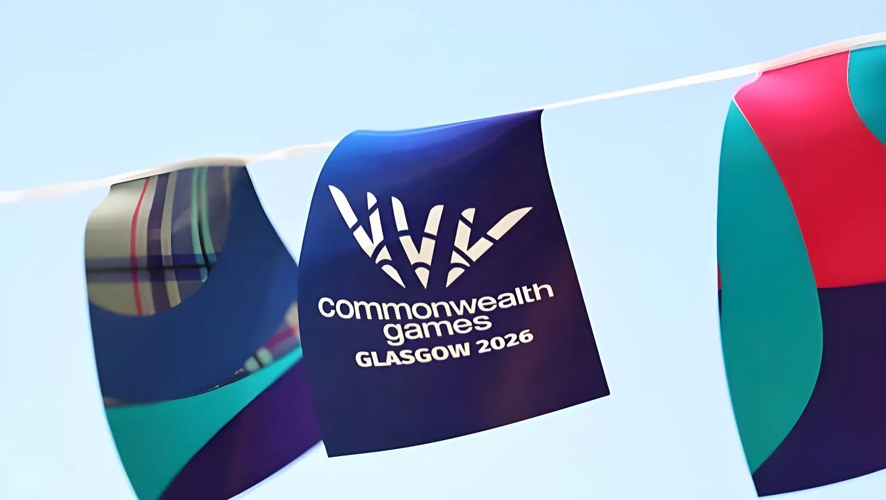

Du 23 juillet au 2 août 2026, Glasgow a accueilli la XXIIIᵉ édition des Jeux du Commonwealth, une compétition sauvée in extremis après le retrait de l'État australien de Victoria en 2023. Organisée avec un budget réduit à environ 150 millions de livres, la compétition s'est achevée sur une domination sans partage de l'Australie au tableau des médailles et sur la passation du drapeau à Amdavad, en Inde, hôte de l'édition du centenaire en 2030.
L'édition 2026 aurait dû se dérouler dans l'État australien de Victoria, mais celui-ci s'est retiré en juillet 2023, jugeant que le coût de l'événement, passé d'environ 2,6 à plus de 6 milliards de dollars australiens, ne représentait plus un rapport qualité-prix acceptable. Après avoir sollicité en vain plusieurs autres villes, la Commonwealth Games Federation (CGF) a conclu un accord avec Commonwealth Games Scotland : en septembre 2024, Glasgow — qui avait déjà accueilli les Jeux en 2014 — a été officiellement confirmée comme ville hôte d'une version radicalement réduite de la compétition, à peine deux ans avant l'échéance.
Le budget final, estimé à environ 150 millions de livres, a été financé en grande partie par la compensation versée par le gouvernement de Victoria, sans contribution des contribuables britanniques ou écossais. Le programme sportif a été réduit à seulement 10 sports (contre 19 lors de Glasgow 2014), avec l'abandon de disciplines comme le cricket, le hockey, la lutte, le badminton ou le tennis de table. Aucun village des athlètes n'a été construit : les délégations ont logé à l'hôtel, et l'ensemble des épreuves s'est déroulé dans seulement quatre sites — le Hydro, le stade de Scotstoun, le SEC Centre et le vélodrome Sir Chris Hoy — regroupés dans un rayon de moins de 13 kilomètres.
La cérémonie d'ouverture, donnée le 23 juillet au Hydro de Glasgow, est entrée dans l'histoire comme la première d'une édition des Jeux du Commonwealth à se dérouler entièrement en intérieur. Son moment le plus commenté a mis en scène le roi Charles III et la reine Camilla faisant une entrée surprise à bord d'un TARDIS grandeur nature, le célèbre vaisseau temporel de la série britannique Doctor Who, avec la complicité du septième Docteur, l'acteur Sylvester McCoy, et du cycliste Sir Chris Hoy. Sur un écran incurvé de 50 mètres, le public a d'abord vu le TARDIS survoler le Loch Ness, les Kelpies et le château d'Édimbourg avant de s'arrêter au château de Balmoral pour embarquer le couple royal.
Le bâton du relais est ensuite entré dans l'arène sur une version acoustique du chant écossais « 500 Miles », avant d'être remis au roi Charles III, chef du Commonwealth, qui a officiellement déclaré les Jeux ouverts devant les délégations de 74 nations et territoires.
Sur le plan sportif, l'Australie a dominé sans partage cette édition amoindrie, remportant 70 des 215 titres en jeu et 171 médailles au total, loin devant l'Angleterre, deuxième avec 29 médailles d'or, et le Canada, troisième. L'Inde a terminé quatrième avec 39 médailles (13 en or, 17 en argent, 9 en bronze). Côté nations britanniques, l'Écosse, pays hôte, a pris la cinquième place avec 13 titres, le Pays de Galles la neuvième avec 9 titres — dont quatre pour la seule cycliste Emma Finucane —, et l'Irlande du Nord la douzième avec 3 titres. Au total, 45 des 74 délégations engagées sont reparties avec au moins une médaille.
Ces Jeux ont aussi été marqués par deux records individuels : le nageur sud-africain Chad Le Clos, médaillé de bronze au relais 4x100 m quatre nages le 29 juillet, est devenu l'athlète le plus médaillé de l'histoire des Jeux du Commonwealth avec 21 médailles cumulées depuis Delhi 2010, dépassant l'Australienne Emma McKeon. Par ailleurs, la Britannique Louise Hoskins, 76 ans, est devenue la plus âgée médaillée d'or de l'histoire de la compétition, dans le cadre d'un programme parasports qui a battu son propre record avec 141 médailles distribuées.
La cérémonie de clôture, organisée le 2 août au Hydro, a scellé la transmission du drapeau à Amdavad (anciennement Ahmedabad), qui accueillera en 2030 l'édition marquant le centenaire des Jeux du Commonwealth, nés à Hamilton en 1930. Le prince Edward a officiellement déclaré les Jeux clos, tandis qu'un segment consacré à l'Inde, orchestré autour du thème « Vasudhaiva Kutumbakam » (« le monde est une famille »), a précédé un concert mené par le groupe écossais Simple Minds.
L'État australien de Victoria se retire de l'organisation des Jeux, invoquant un coût passé de 2,6 à plus de 6 milliards de dollars australiens.
Glasgow est officiellement confirmée comme ville hôte d'une édition réduite des Jeux, à financer sans argent public britannique.
Cérémonie d'ouverture au Hydro : Charles III et Camilla font une entrée surprise à bord d'un TARDIS grandeur nature.
215 épreuves disputées dans 10 sports et 6 parasports, répartis sur seulement quatre sites.
Le Sud-Africain Chad Le Clos devient l'athlète le plus médaillé de l'histoire des Jeux du Commonwealth (21 médailles).
Cérémonie de clôture au Hydro et passation officielle du drapeau à Amdavad, en Inde.
Amdavad (Ahmedabad) accueillera l'édition du centenaire des Jeux du Commonwealth.
« Nous nous épanouirons ici, à Glasgow. »
— Charles III, discours d'ouverture, Glasgow, 23 juillet 2026L'histoire de Glasgow 2026 dépasse le simple récit sportif : elle illustre la fragilité économique croissante des grands événements multisports, à l'heure où plusieurs villes pressenties pour organiser cette édition — Kuala Lumpur, Cardiff, Calgary, Edmonton ou Adelaide — avaient toutes renoncé face à l'explosion des coûts. En livrant des Jeux crédibles pour une fraction du budget initialement prévu par Victoria, Glasgow a sans doute évité au mouvement du Commonwealth une interruption inédite depuis sa création en 1930. Mais la question reste entière : ce modèle « low-cost », avec moins de sports, moins d'athlètes et des tribunes parfois clairsemées, deviendra-t-il la norme pour les éditions à venir, ou Amdavad 2030 renouera-t-elle avec des Jeux à plus grande échelle pour célébrer dignement le centenaire de la compétition ?
From 23 July to 2 August 2026, Glasgow hosted the XXIII Commonwealth Games, a competition rescued at the eleventh hour after the Australian state of Victoria withdrew as host in 2023. Delivered on a slashed budget of around £150 million, the Games ended with Australia dominating the medal table and the flag passed to Amdavad, India, host of the Games' centenary edition in 2030.
The 2026 edition was originally due to be held in the Australian state of Victoria, but Victoria withdrew in July 2023 after its projected cost rose from around A$2.6 billion to more than A$6 billion, which the state government said no longer represented value for money. After several other cities declined to bid, the Commonwealth Games Federation (CGF) struck a deal with Commonwealth Games Scotland: in September 2024, Glasgow — which had already hosted the Games in 2014 — was confirmed as host of a radically scaled-down edition, with barely two years to prepare.
The final budget, estimated at around £150 million, was largely funded by compensation paid by the Victorian government, with no contribution from UK or Scottish taxpayers. The sports programme was cut to just 10 sports (down from 19 at Glasgow 2014), dropping disciplines such as cricket, hockey, wrestling, badminton and table tennis. No athletes' village was built; teams stayed in hotels, and every event took place across just four venues — The Hydro, Scotstoun Stadium, the SEC Centre and the Sir Chris Hoy Velodrome — all within an eight-mile corridor.
The opening ceremony, held on 23 July at The Hydro in Glasgow, went down in history as the first Commonwealth Games opening ceremony ever staged entirely indoors. Its most talked-about moment saw King Charles III and Queen Camilla make a surprise entrance aboard a full-size replica of the TARDIS, the time-travelling machine from the British series Doctor Who, alongside Sir Chris Hoy and the Seventh Doctor, actor Sylvester McCoy. On a 50-metre curved LED screen, the crowd first watched the TARDIS travel over Loch Ness, The Kelpies and Edinburgh Castle, before it stopped at Balmoral Castle to collect the royal couple.
The baton then entered the arena to an acoustic version of the Scottish song "500 Miles", before being handed to King Charles III, Head of the Commonwealth, who officially declared the Games open in front of delegations from 74 nations and territories.
On the field of play, Australia dominated this scaled-down edition, winning 70 of the 215 gold medals on offer and 171 medals overall, far ahead of England, second with 29 golds, and Canada, third. India finished fourth with 39 medals (13 gold, 17 silver, 9 bronze). Among the home nations, host Scotland finished fifth with 13 golds, Wales ninth with 9 golds — four of them won by cyclist Emma Finucane alone — and Northern Ireland twelfth with 3 golds. In all, 45 of the 74 competing delegations won at least one medal.
The Games were also marked by two individual records: South African swimmer Chad Le Clos, who won bronze in the men's 4x100m medley relay on 29 July, became the most decorated athlete in Commonwealth Games history with 21 medals collected since Delhi 2010, overtaking Australia's Emma McKeon. Separately, Britain's Louise Hoskins, 76, became the oldest gold medallist in the history of the Games, as part of a Para-sport programme that broke its own record with 141 medals awarded.
The closing ceremony, held on 2 August at The Hydro, sealed the handover of the flag to Amdavad (formerly Ahmedabad), which will host the centenary edition of the Commonwealth Games in 2030, a hundred years after the first Games were held in Hamilton in 1930. Prince Edward formally declared the Games closed, while a segment celebrating India, built around the theme "Vasudhaiva Kutumbakam" ("the world is one family"), preceded a concert headlined by Scottish rock band Simple Minds.
The Australian state of Victoria withdraws as host, citing a cost rise from A$2.6 billion to more than A$6 billion.
Glasgow is officially confirmed as host of a scaled-down edition, to be delivered without UK public funding.
Opening ceremony at The Hydro: King Charles III and Queen Camilla make a surprise entrance aboard a full-size TARDIS.
215 medal events contested across 10 sports and 6 Para sports, held at just four venues.
South Africa's Chad Le Clos becomes the most decorated athlete in Commonwealth Games history (21 medals).
Closing ceremony at The Hydro and official handover of the flag to Amdavad, India.
Amdavad (Ahmedabad) will host the centenary edition of the Commonwealth Games.
"We will certainly thrive here in Glasgow."
— King Charles III, opening address, Glasgow, 23 July 2026The story of Glasgow 2026 is bigger than sport: it captures the growing financial fragility of major multi-sport events, at a time when several cities considered for this edition — Kuala Lumpur, Cardiff, Calgary, Edmonton and Adelaide — had all declined to bid as costs spiralled. By delivering a credible Games for a fraction of the budget Victoria had originally envisaged, Glasgow likely spared the Commonwealth movement its first interruption since the Games began in 1930. But the question remains open: will this "low-cost" model, with fewer sports, fewer athletes and sometimes patchy crowds, become the new normal for future editions, or will Amdavad 2030 return to a larger-scale Games to mark the competition's centenary in style?